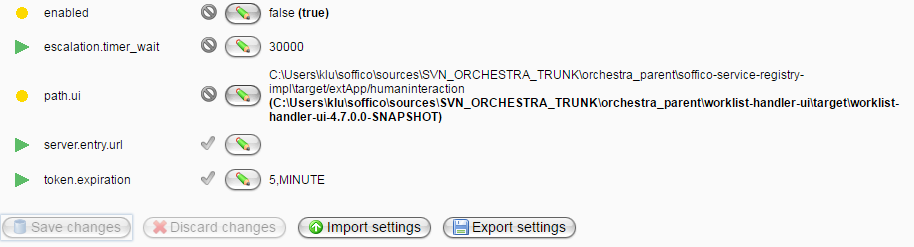
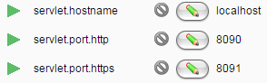
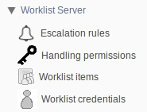

Worklist Server

Topic content
If you don't know anything about the work list handler, read the introduction in Work List Handler first.
Enabling the Work List Handler for Runtime
Standardly, the work list handler is disabled in the runtime. Follow these steps for enabling it:
1.Go to Settings -> Environment settings
2.Select the group "Worklist integration"
3.Set the parameter "enabled" to "true"
4.Set the parameter "path.ui" to the sources of the work list handler (the application folder is meant here, this is the folder that has the same name as the worklist-handler-ui war file - but do not select the war file itself here!)
5.Save the changes

The environment settings prepared for enabling the work list handler
6.Restart Orchestra
7.The work list handler is now available. The standard ULR is http://localhost:8090/humaninteraction/ui/. You can configure the URL under Settings->Environment Settings in the group "Embedded web application". You can set the host name and the ports here:

Monitor Configurations
For managing the work list handler, there are several pages in the Orchestra monitor:

Menu for the work list handler
Details about the pages can be found here:
See also